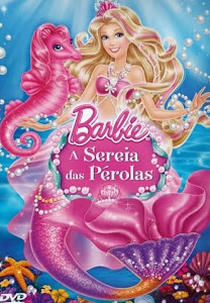

Mundo Barbie
-

-

-

-

-

-

-

-

-

-

-

-

-

-

-

-

-

-

-

- 
-

-

-

-

-

-

Barbie e a Estrela do Rock
Ano de lançamento: 1987
Se você não gosta de guerras, arrume sua malinha e embarque nesse foguete junto com a Barbie e sua turma. A aventura vai começar. Neste desenho, nossa estrelinha vai ao espaço fazer um grande show de rock para promover a paz mundial e a amizade entre os povos.
Barbie e seus amiguinhos - Ken, Diva, Dee Dee, Dana e Derek - falando, cantando, tocando e dançando em sua banda, como verdadeiros artistas de cinema.
Barbie: O Quebra-Nozes
Ano de lançamento: 2001
Como que por magia, Barbie ganha vida nesta prodigiosa adaptação do conto clássico de Hoffman, animado por computador. A história inicia-se quando Clara (Barbie) recebe um belo Quebra-Nozes de madeira como presente de sua tia favorita. Nessa noite, o Quebra-Nozes ganha vida para expulsar o Rei dos Ratos, que invadiu os aposentos de Clara. Ela acorda e ajuda o Quebra-Nozes, mas o Rei dos Ratos, através de um feitiço maléfico, a faz diminuir de tamanho. Clara e o Quebra-Nozes partem numa aventura fantástica para encontrar a Fada Açucarada, a única pessoa com poderes para quebrar o maléfico feitiço.
Em cenas de dança espetaculares, os movimentos reais de bailarinos do Corpo de Baile da Cidade de Nova York transportam a beleza do balé para a tela de uma forma inédita.
Barbie n' O Quebra Nozes demonstra que, para aqueles que são amáveis, inteligentes e corajosos, tudo é possível...
Barbie: A Rapunzel
Ano de lançamento: 2002
Nessa versão animada com a boneca Barbie a heroína vive a bela Rapunzel, dona dos mais lindos cabelos que alguém já viu. Mas Rapunzel é uma serviçal e torna-se prisioneira de uma bruxa muito poderosa e ciumenta. Presa numa torre, Rapunzel irá da janela conhecer e se apaixonar pelo Príncipe Stefan, o único que pode salvá-la.
Barbie: Lago dos Cisnes
Ano de lançamento: 2003
Barbie ganha vida em seu terceiro filme, Barbie Lagos dos Cisnes. Baseado na música de Tchaikovsky e no adorado conto de fadas, o filme traz Barbie como Odette, a jovem filha do padeiro que segue um unicórnio até a Floresta Encantada. O malvado feiticeiro Rodrigo que pertende derrotar sua prima a Fada e tomar a Floresta, transforma Odette em cisne. A Fada Rainha consegue amenizar o feitiço fazendo com que Odette seja humana à noite e cisne de dia. Odette percebe que, mesmo que sinta ser a pessoa errada para a tarefa, é seu destino salvar a Floresta Encantada. Mas como pode uma garota armada apenas de sua coragem, honestidade e inteligência conseguir isso, tudo enquanto o belo Príncipe Daniel se apaixona por ela? Barbie Lago dos Cisnes combina fantasia, balé e inesquecível música de Tchaikovsky interpretada pela Orquestra Sinfônica de Londres. Peter Martins, o diretor do Balé da Cidade de Nova York, coreografa as maravilhosas cenas de dança de uma maneira nunca antes vista. Barbie Lago dos Cisnes mostra que cada um de nós é mais forte do que pensa.
Barbie: A Princesa e a Pebleia
Ano de lançamento: 2004
Barbie vem à vida nesta moderna versão de um conto clássico sobre identidades trocadas e o poder da amizade. Baseado na história de Mark Twain, Barbie em uma surpreendente papel duplo como uma princesa e uma pobre garota de vila - duas garotas que possuem uma semelhança surpreendente! Os caminhos das garotas estão destinados a se cruzar quando a princesa Anneliese é capturada e Érika, a garota de vila, tem que tentar salvá-la. Poderia Érika fingir ser a Princesa e enganar quem a capturou, o maldoso Preminger? E o belo Rei Dominick, que se apaixona por Érika, confundindo-a com Anneliese? Nesta mogica performance musical, duas belas e corajosas garotas ousam seguir seus sonhos e descobrir que o destino está escrito em um lugar muito especial: seu coração!
Barbie Fairytopia
Ano de lançamento: 2005
A história se passa em Fairytopia, um mundo mágico, no qual Barbie é a fada Elina, que mora numa flor. Um dia a sua casa-flor adoece, e as outras fadinhas não conseguem mais voar. Munida de coragem e determinação, Barbie sai em busca de Azura, a Fada-Guardiã, que talvez possa ajudá-la. Mas o que ela não sabe é que foi a maligna Laverna que fez a flor ficar doente e as fadas perderem o dom de voar. Tudo é parte de um plano para dominar Fairytopia. A bordo de uma bela borboleta gigante, Elina vive diversas aventuras nos lugares encantados, em busca de uma solução para os problemas.
Barbie e a Magia de Aladus
Ano de lançamento: 2005
Barbie alça vôo nesse maravilhoso conto de fadas de princesa em Barbie e a Magia de Aladus! A princesa Annika (Barbie) foge das garras de um malvado feiticeiro, explora as maravilhas do Reino das Nuvens e se junta a um magnífico cavalo alado para derrotar o feiticeiro e quebrar o encanto que aprisiona sua família. Espetaculares cenas em 3D adicionam muito mais encanto a esta extraordinária aventura!
Diário da Barbie
Ano de lançamento: 2006
Amigas Fabulosas, Grandes Sonhos e Trepidantes Aventuras! Bem, tu nem vais acreditar nesta história fantástica. Recheada de amizade e magia, música sensacional, roupa elegante e, claro, romance! É um novo ano lectivo, e espero que seja absolutamente mágico! Adoro andar com os meus melhores amigos porque nos divertimos sempre imenso. Sou guitarrista na nossa banda e tocamos à séria (apesar de ainda não termos tocado para ninguém de fora)! Também trabalho na estação de televisão da escola, que é o sonho da minha vida (ainda que tenha que escrever textos patetas para a Raquelle)! Ah, já me ia esquecendo - também tenho uma paixão louca pelo miúdo mais popular lá da escola - ele ainda não reparou em mim, mas vai reparar! Com um diário especial e uma pulseira mágica, estou a ganhar confiança para alcançar todos os meus sonhos. Descobre como a vida pode ser bestial, divertida e excitante no Diário da Barbie.
Barbie Fairytopia 2 - Mermaidia
Ano de lançamento: 2006
Elina é uma bela fada do campo que vive em Fairytopia, um mundo mágico povoado de fadas e seres encantados. Ela finalmente ganha um par de asas para poder voar e ser como as outras fadas! Porém, para salvar o reino submarino de Mermaidia, Elina terá que abandonar suas adoradas asas para sempre! Esta história de Fada do Campo que se transforma em uma linda sereia e abra mão do que lhe é mais importante para ajudar um reino ameaçado
Barbie em as Doze Princesas Bailarinas
Ano de lançamento: 2006
Quando a malvada tia Rowena se muda para o castelo, ela proíbe que as princesas dancem ou cantem para sempre, pois ela acredita que não é o tipo de comportamento apropriado para uma princesa. As princesas descobrem um palácio mágico e secreto para onde fogem, mas quando Barbie fica sabendo que a sua tia está tramando para governar o reino, ela precisa voltar para ajudar o seu pai, o rei!
Barbie a Magia do Arco-Íris
Ano de lançamento: 2007
Elina vai para uma escola de fadas no Palácio de Cristal, onde ela precisa aprender a usar os seus poderes encantados para realizar o Vôo da Primavera. Infelizmente, a malvada Laverna está de volta e pretende congelar a primavera! Será que Elina e suas novas amigas fadas conseguirão derrotar Laverna ou será inverno para sempre em Fairytopia? Após salvar duas vezes Fairytopia, Elina se tornou uma celebridade e se sente segura com suas habilidades. Até que Azura visita o Prado Mágico com um novo desafio: ir ao Palácio de Cristal e treinar para ser uma aprendiz de Azura, e aprender o Vôo da Primavera, o ritual anual que traz vida ao Primeiro Arco-Íris da Primavera. Lá,, Elina conhece os outros aprendizes de diferentes lugares, incluindo a Fada Faiscante de temperamento inflamado chamada Sunburst, e a Ninfa da Floresta, Glee. As coisas não vão bem quanto Elina esperava, quando ela acidentalmente cai em uma armadilha ao colocar um feitiço em um sapo, aparentemente inocente. O sapo é na verdade Laverna, o feitiço a liberta de sua prisão e a transforma novamente em sua antiga forma. Laverna coloca todas das Fadas Guardiãs em um sono profundo e planeja contra Fairytopia. Agora, a Enchantress precisa reunir Elina e as outras aprendizes para realizar o Vôo da Primavera no lugar das Guardiãs, e assim evitar que Fairytopia caia num rigoroso inverno de 10 anos
Barbie em a Princesa da Ilha
Ano de lançamento: 2007
A princesa Rosella, ainda criança, sofre um naufrágio e vai parar em uma ilha. Lá, ela aprende a cantar e falar com uma adorável família de animais, que inclui Sagi, um panda vermelho, Azul, o pavão, e Tika, o bebê elefante. Inesperadamente, Rosella conhece o príncipe para o seu castelo. Em contato com todas as coisas novas da civilização, Rosella e seu amigo Tika descobrem um plano diabólico para dominar o reino! Com um final surpreendente e inesperado, as ações de Rosella mostram que ela é a verdadeira princesa. Barbie em A Princesa da Ilha – Uma Aventura Musical mostra que quando somos guiados pelo amor, milagres podem estar mais próximos do que imaginamos.
Barbie Butterfly: Uma Nova Aventura em Fairytopia
Ano de lançamento: 2008
Butterfly é uma Fada-Borboleta que ama ler e sonhar sobre o mundo. Flutterfield, sua terra natal, é protegida pelas brilhantes luzes mágicas da Rainha. Mas, quando a Rainha é envenenada pela perversa fada Henna, as luzes especiais começam a sumir. Agora, a solução está nas mãos de Butterfly e seus amigos, que saem numa jornada além das fronteiras seguras de sua cidade atrás de um antídoto que salvará a Rainha.
Barbie e o Castelo de Diamante
Ano de lançamento: 2008
Barbie e Teresa vivem em um chalezinho na floresta. Um dia elas encontram um espelho encantado, que aprisiona uma das 3 musas da músisa dentro do espelho. Juntas, embarcaram em uma grande aventura para salvar a mais nova amiga. Nessa linda história de amizade, encontram o mais belo castelo dos contos de fadas, o "Castelo de Diamante".
Barbie em A Canção de Natal
Ano de lançamento: 2008
No filme, Barbie é Eden Starling, uma glamurosa cantora de um teatro londrino. Acompanhada de seu gato Chuzzlewit, a personagem planeja fazer com que todos os artistas do local permaneçam e ensaiem para o tão esperado Dia de Natal. Observando tal atitude, Catherine, amiga de infância da diva, conversa sobre o seu mal-humor. Até que, em um momento mágico, três espíritos do Natal levam Eden a uma fantástica viagem que abrirá seu coração para o verdadeiro sentido do Natal.
Barbie em a Pequena Polegar
Ano de lançamento: 2009
Conheça a pequenina garota chamada Polegarzinha. Ela vive em harmonia com a natureza no mundo mágico de Twillerbees, um vasto jardim coberto por uma área verde exuberante. Tudo parecia tranqüilo, até que Polegarzinha e sua amiga são surpreendidas por uma gigantesca máquina que as transportam para um lugar muito estranho... um grande apartamento na cidade. Lá elas conhecem Makena, uma menina egoísta que acaba virando amiga das fadinhas. Além disso, descobrem os planos que ameaçam destruir Twillerbees. Aproveitando a magia da natureza, Polegarzinha e suas amigas tentarão salvar o jardim e provar que pequenas pessoas podem fazer uma grande diferença.
Barbie e as Três Mosqueteiras
Ano de lançamento: 2009
Em Barbie e As Três Mosqueteiras, a boneca mais famosa do mundo interpreta Corinne, um jovem garota do campo que vai a Paris para realizar um sonho, o de se tornar uma mosqueteira. Lá, ela encontrar três garotas que compartilham secretamente o mesmo desejo.
Será que as meninas com ar de princesas conseguirão dançar no baile de máscaras e arrumar o figurino certo e ainda salvar o príncipe - tudo isso sem quebrar o salto do sapato?
Em Barbie e As Três Mosqueteiras, a boneca mais famosa do mundo interpreta Corinne, um jovem garota do campo que vai a Paris para realizar um sonho, o de se tornar uma mosqueteira. Lá, ela encontrar três garotas que compartilham secretamente o mesmo desejo. Será que as meninas com ar de princesas conseguirão dançar no baile de máscaras e arrumar o figurino certo e ainda salvar o príncipe - tudo isso sem quebrar o salto do sapato?
Barbie em Vida de Sereia
Ano de lançamento: 2010
Nesta nova aventura, Barbie é Merliah, uma campeã de surf de Malibu. Em um momento ela é uma adolescente e no outro aprende um chocante segredo de família: ela é uma sereia! Merliah e seu amigo golfinho, Zuma, partem para uma aventura no fundo do mar para resgatar sua mãe, a rainha de Oceana. Com ajuda das suas amigas sereias, Merliah salva o reino do mar. No final, ela descobre que o que a faz diferente é o que a torna especial.
Barbie: Moda e Magia
Ano de lançamento: 2010
Barbie parece ter tudo: grandes amigos, boas notas, um namorado fantástico, uma carreira de sucesso como atriz, beleza, inteligência, riqueza... mas um dia tudo dá errado. Além das pessoas dozerem coisas terríveis sobre a sua atuação, Ken acaba o namoro com ela. Barbie, então, decide visitar sua tia Millie, um designer de moda, em Paris, para esfriar a cabeça. Mas quando Barbie chega a Paris, ela descobre que sua tia está prestes a fechar sua loja de moda, a millicent's. Barbie e seus amigos conseguirão fazer um evento de moda e salvar a loja de sua tia ou as sua dúvidas poderão causar um desastre?
Merliah e seu amigo golfinho, Zuma, partem para uma aventura no fundo do mar para resgatar sua mãe, a rainha de Oceana. Com ajuda das suas amigas sereias, Merliah salva o reino do mar. No final, ela descobre que o que a faz diferente é o que a torna especial.Barbie e O Segredo das Fadas
Ano de lançamento: 2011
Uma aventura fantástica, onde Barbie descobre que há fadas vivendo secretamente à nossa volta! Quando Ken é levado, repentinamente, por um grupo de fadas, as duas amigas estilistas de Barbie revelam que são na realidade fadas e que Ken foi levado para um mundo mágico secreto não muito distante!
Barbie e a sua rival, Raquelle, partem com as suas amigas numa viagem recheada de ação para o trazerem de volta. Pelo caminho elas terão de se manter unidas e aprender que a verdadeira magia não está apenas no mundo das fadas, mas no poder da amizade.
Barbie: Escola de Princesas
Ano de lançamento: 2011
Barbie interpreta Blair, uma garota simples e órfã que foi sorteada para estudar na exclusiva Escola de Princesas. A escola é um lugar incrível onde as futuras princesas aprendem dança, etiqueta, artes e outras habilidades indispensáveis a uma princesa. Blair adora suas aulas, suas fadinhas assistentes e suas novas amigas, as Princesas Hadley e Isla.
Barbie - Um Natal Perfeito
Ano de lançamento: 2011
Barbie e suas irmãs, Skipper, Stacie e Chelsea estavam prestes a ir pra Nova York com suas boas e fabulosas ideias para época do Natal. Quando elas estão prestes a ir para lá, uma enorme tempestade de neve os impede de ir a Nova York! Será que a Barbie e suas irmãs encontrarão uma maneira de ter o seu Natal perfeito?
Barbie em Vida de Sereia 2
Ano de lançamento: 2012
Esta nova aventura, Merliah aproveita sua vida de surfista nas ondas da Austrália, enquanto curte o fundo do mar como sereia. Até que uma rival muito competitiva ameaça a segurança do Oceano ao libertar a malvada Eris. Merliah precisará da ajuda de seus amigos e das sereias embaixadoras para tentar salvar o oceano e ganhar a competição de surfe. Será que ela conseguirá?
Barbie: A Princesa e a Pop Star
Ano de lançamento: 2012
"Nesta aventura super musical, estrelas como Tori (Barbie), a princesa bondosa de Meribella que preferem cantar e dançar do que realizar seus deveres reais. Quando sua pop star favorita Keira visita o reino, as meninas descobrem que têm muito em comum, incluindo um segredo mágico que lhes permite serem parecidas uma com a outra. Em primeiro lugar, trocando de lugar parece uma ótima idéia, até que cada menina percebe que a vida do outro não é tão fácil como parece! Mas Meribella também tem um segredo mágico, e quando ele é roubado, o reino inteiro é colocado em perigo. Será a verdadeira amizade salvar o dia? Recheado de canções fantásticas, modas fabulosas e diversão novos amigos, é uma celebração emocionante musical que mostra a melhor coisa que você pode ser é você mesmo
Barbie e as Sapatilhas Mágicas
Ano de lançamento: 2013
Dance com Barbie nesta mágica aventura. Barbie é Kristyn, uma bailarina que tem grandes sonhos. Quando ela calça um par de sapatilhas pink brilhante, Kristyn e sua melhor amiga Hailey vão, de uma maneira mágica, para o fantástico mundo do balé. Lá, ela descobre que precisa dançar seguindo seu coração para derrotar a malvada Rainha das Neves. Participe desta aventura maravilhosa dançando os clássicos do balé Giselle e O Lago dos Cisnes, onde seus sonhos se tornam realidade
Barbie: Butterfly e a Princesa Fairy
Ano de lançamento: 2013
Butterfly, a Fada Borboleta viaja para Shimmervale um reino mágico alimentado por cristais. Lá, ela descobre o brilho encantador das Cataratas e se torna a melhor amiga de Catania a princesa das fadas. Quando uma fada má tenta roubar todos os cristais em Shimmervale, as duas meninas têm de se unir para salvar o reino e descobrem que a amizade supera qualquer obstáculo.
Barbie e as Suas Irmãs em Uma Aventura de Cavalos
Ano de lançamento: 2013
Barbie e suas irmãs irão passar as férias nos Alpes e irão fazer novos amigos animais e Barbie terá uma conexão instantânea com o cavalo que ela treina.
Barbie: A Sereia Das Pérolas
Ano de lançamento: 2014
Barbie é Lumina uma linda sereia, que sonha em ser uma princesa. Desde pequena, Lumina tem um poder mágico de fazer as pérolas dançarem e brilharem. Ela e sua melhor amiga Tuca, um cavalo-marinho cor-de-rosa, embarcam em uma aventura ao fantástico reino das sereias. Lá, ela ajuda suas amigas com seus poderes incríveis, criando penteados lindos para o Baile Real. Lumina então descobre que suas pérolas mágicas são a chave para desvendar seu verdadeiro destino e salvar para sempre o reino das sereias.
Barbie e o Portal Secreto
Ano de lançamento: 2014
Em seu novo filme, Barbie estrela como a Alexa, uma linda princesa que descobre um Portal Secreto que leva a uma terra encantada cheia de surpresas e seres mágicos! Ao cruzar o Portal, Alexa conhece a sereia Romy e a fada Nori e elas lhe contam que uma princesa mimada chamada Malúcia está capturando toda a magia do reino só para ela. Para sua surpresa, nesse mundo Alexa ganha poderes mágicos, e suas novas amigas têm certeza de que somente ela pode recuperar a magia do reino. Descubra o que acontece quando a princesa Alexa deixa seus medos de lado e defende suas amigas de Malúcia, e percebe que o poder da amizade é muito mais precioso que qualquer magia.
Barbie Super Princesa
Ano de lançamento: 2015
Barbie estrela como Kara, uma princesa moderna com uma vida cotidiana. Um dia, depois de ter sido beijada por uma borboleta mágica, Kara logo descobre que tem super poderes incriveis, permitindo-lhe para se transformar em Super faísca, seu segredo, de combate ao crime combater ao ego. Mas seu primo com ciúmes também pega a borboleta e se transforma em super-herói nemesis de Kara, escuro faísca. Quando descobrem verdadeiro inimigo do reino, eles podem colocar de lado suas diferenças para formar uma equipe de super?
Barbie: Rainhas do Rock
Ano de lançamento: 2015
Neste otimista musical, estrelas Barbie ™ como a princesa Courtney, uma princesa moderna, cujo mundo está virado de cabeça para baixo quando ela muda de lugar com Erika, um rockstar famoso. Dois mundos diferentes colidem quando um mix-up envia Princesa Courtney a Camp Pop e Erika, a Camp Royalty. Enquanto os líderes dos campos rivais tentar corrigir o mix-up, tanto Courtney e Erika aprender a adaptar-se às diferentes mundos e se divertir enquanto faz novos amigos, inesperados. Quando as meninas aprendem ambos os campos estão em risco de encerrar, eles devem abraçar suas diferenças, encontrar suas verdadeiras vozes, e se reúnem para um épico cantar-off que mostra tudo é possível quando você se atreve a sonhar grande!
Barbie e Suas Irmãs em Uma Aventura de Cachorrinhos
Ano de lançamento: 2015
Barbie, suas irmãs, e seus adoráveis filhotinhos saem em uma caçada para achar um tesouro perdido.
Barbie e as Agentes Secretas
Ano de lançamento: 2016
Barbie e suas amigas são ginastas vencedoras de vários campeonatos. Elas acabam sendo recrutadas para serem agentes secretas.
Barbie - Dreamtopia
Ano de lançamento: 2016
Barbie, Chelsea, e seu filhote de cachorro Mel nadam através dos rios do arco-íris com as sereias bonitas e voam através das nuvens do algodão doce com fadas em um mundo mágico.
Barbie: Aventura nas Estrelas
Ano de lançamento: 2016
Barbie e seu bichinho Pipoca levavam uma vida cheia de aventura e diversão voando de hoverboard em um maravilhoso planeta distante. Mas, quando o brilho da sua galáxia enfraquece e as estrelas começam a parar sua dança pelo céu, ela precisa abandonar o seu lar rumo ao Planeta Capital e se une a uma equipe incrível em uma missão para salvar as estrelas.
Barbie e Suas Irmãs em Busca dos Cachorrinhos
Ano de lançamento: 2016
Depois das garotas e seus adoráveis cãezinhos chegarem a uma ilha paradisíaca para a grande competição de dança da Chelsea, elas decidem fazer uma rápida visita ao Festival do Cavalo Dançante. Mas quando seus cachorrinhos somem no evento, sobra para as garotas encontrá-los antes da apresentação de Chelsea. Enquanto os filhotes estão desaparecidos tendo a sua própria aventura, Barbie e suas irmãs devem usar a imaginação e trabalhar juntas para encontrar seus amiguinhos peludos nessa emocionante aventura!
Barbie em um Mundo de Video Game
Ano de lançamento: 2017
Prepare-se para entrar em ação! Quando Barbie, num passe de mágica, entra em seu videogame favorito, ela fica muito empolgada ao ver que se transformou em uma divertida personagem patinadora. No jogo, ela conhece Cutie, a adorável nuvenzinha, e Bella, a princesa patinadora. Juntas, elas logo descobrem que um astuto emoji está tentando assumir o controle do jogo. Enquanto percorre nível por nível, Barbie, precisa confiar em suas incríveis habilidades de jogadora e sua criatividade para salvar sua equipe e ganhar o jogo!
Barbie e os Golfinhos Mágicos
Ano de lançamento: 2017
Nessa divertida aventura debaixo d'água, Barbie e suas irmãs visitam o Ken no seu estágio de verão, onde ele trabalha em recife de corais pesquisando golfinhos. Enquanto mergulham e exploram o coral, as irmãs descobrem os raros e coloridos golfinhos que só visitam uma vez por ano. Este incrível achado encoraja as meninas a aprenderem mais sobre preservar o coral e toda a vida marinha que existe lá. É quando elas conhecem Isla, uma nova amiga misteriosa que também está numa missão para salvar o coral. O que parece ser uma tarefa simples se torna uma grande aventura quando é revelado que Isla é uma sereia. Mas não há tempo para comemorar a amizade com a sereia, porque Isla precisa da ajuda de Barbie, suas irmãs e os golfinhos mágicos para salvarem o dia.